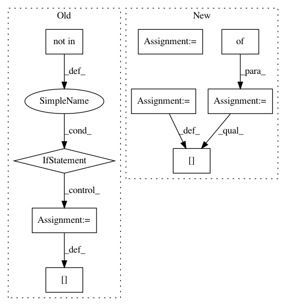

01b4ec3f531e07b8c4a32a13288c963ad8b4b843,server/website/website/db/myrocks/parser.py,MyRocksParser,convert_dbms_metrics,#MyRocksParser#Any#Any#Any#,148
Before Change
raise Exception("Unknown metric type for {}: {}".format(
name, metadata.metric_type))
if target_objective is not None and self.target_metric(target_objective) not in metric_data:
raise Exception("Cannot find objective function")
if target_objective is not None:
metric_data[target_objective] = metric_data[self.target_metric(target_objective)]
else:
// default
metric_data["throughput_txn_per_sec"] = \
metric_data[self.target_metric(target_objective)]
return metric_data
def convert_dbms_knobs(self, knobs):
knob_data = {}
After Change
return valid_metrics, diffs
def convert_dbms_metrics(self, metrics, observation_time, target_objective):
base_metric_data = {}
metric_data = {}
for name, value in list(metrics.items()):
prt_name = self.partial_name(name)
if prt_name in self.numeric_metric_catalog_:
metadata = self.numeric_metric_catalog_[prt_name]
if metadata.vartype == VarType.INTEGER:
converted = float(self.convert_integer(value, metadata))
elif metadata.vartype == VarType.REAL:
converted = self.convert_real(value, metadata)
else:
raise ValueError(
("Found non-numeric metric "{}" in the numeric "
"metric catalog: value={}, type={}").format(
name, value, VarType.name(metadata.vartype)))
if metadata.metric_type == MetricType.COUNTER:
assert isinstance(converted, float)
base_metric_data[name] = converted
metric_data[name] = converted / observation_time
elif metadata.metric_type == MetricType.STATISTICS:
assert isinstance(converted, float)
base_metric_data[name] = converted
metric_data[name] = converted
else:
raise ValueError(
"Unknown metric type for {}: {}".format(name, metadata.metric_type))
In pattern: SUPERPATTERN
Frequency: 3
Non-data size: 9
Instances
Project Name: cmu-db/ottertune
Commit Name: 01b4ec3f531e07b8c4a32a13288c963ad8b4b843
Time: 2019-10-14
Author: dvanaken@cs.cmu.edu
File Name: server/website/website/db/myrocks/parser.py
Class Name: MyRocksParser
Method Name: convert_dbms_metrics
Project Name: cmu-db/ottertune
Commit Name: 01b4ec3f531e07b8c4a32a13288c963ad8b4b843
Time: 2019-10-14
Author: dvanaken@cs.cmu.edu
File Name: server/website/website/db/base/parser.py
Class Name: BaseParser
Method Name: convert_dbms_metrics
Project Name: cmu-db/ottertune
Commit Name: 01b4ec3f531e07b8c4a32a13288c963ad8b4b843
Time: 2019-10-14
Author: dvanaken@cs.cmu.edu
File Name: server/website/website/db/myrocks/parser.py
Class Name: MyRocksParser
Method Name: convert_dbms_metrics
Project Name: snorkel-team/snorkel
Commit Name: 21678f424e8a7b0734e2dcc31d0a2ee2e10af097
Time: 2016-09-04
Author: ajratner@gmail.com
File Name: snorkel/annotations.py
Class Name: AnnotationManager
Method Name: load